class: center <h1>Pojdimo na pohod v gorski park Catoctin</h1> ***Koliko kalorij boste porabili s pohodništvom po petmiljski krožni poti?*** --- layout: true background-image: url(on1.png) background-position: right top background-repeat: no-repeat --- <h2>Za začetek</h2> Po zaključku tega modula bi morali biti sposobni: -- <ul> <li>uporabiti Excelovo preglednico za izračune</li> -- <li>z Excelovo preglednico določiti oceno svojega pohoda po izbranih odsekih</li> -- <li>uporabiti rezultate iz preglednice, da z grafom poiščete svojo stopnjo porabe energije</li> -- <li>uporabiti rezultate iz grafa in preglednice Excel, za določitev porabe svojih kalorij</li> -- <li>ugotoviti, koliko kalorij (Big Macov) ste pokurili na svojem pohodu</li> </ul> ??? Vprašaj, če je kdo že uporabljal Excel. -- <img class="emoji" alt="warning" src="" height='30px'> *Vedeti morate tudi, kje je gorski park Catoctin.* --- <h2>Lokacija</h2> [Gorski park Catoctin](https://www.nps.gov/cato/index.htm) leži v gorovju Apalači, ki se razteza od Georgie do jugovzhodne Kanade. Apalaško gorovje je razdeljeno na fiziografske province, ki se razlikujejo po geoloških lastnostih, kot sta starost ali struktura. Gorski park Catoctin leži v provinci [Blue Ridge](https://www.peakbagger.com/range.aspx?rid=164) v južnih in srednjih Apalačih. Modri greben vsebuje najvišje gore v vzhodni Severni Ameriki (npr. Mount Mitchell, NC, 2037 m) in vsebuje kamnine, stare več kot milijardo let. Za več informacij o geologiji glejte [Apalaške geološke province](https://www.usgs.gov/). <br> <center>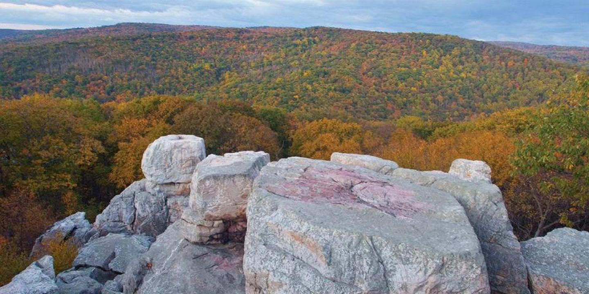</center> ??? Ne pozabi omeniti vseh znamenitosti. --- <br> Geološka zgradba gorskega parka Catoctin vključuje vse tri osnovne vrste kamnin: -- <ul> <li><b>magmatske kamnine</b>, nastale zaradi starodavne vulkanske dejavnosti, ki je bila nekoč prisotna na tem območju;</li> -- <li><b>sedimentne kamnine</b>, nastale z erozijo starejših kamnin in odlaganjem nastalega sedimentnega drobirja;</li> -- <li><b>metamorfne kamnine</b>, ki so nastale med dogodki izgradnje gora, ki so ustvarili gorovje Apalači.</li> </ul> -- Ko je prišlo do metamorfizma, so se magmatske in sedimentne kamnine pretvorile v nove kamnine, ki so zdaj izpostavljene v globoko erodiranih gorah. Te metamorfne kamnine so odporne na vremenske vplive in erozijo ter tvorijo grobe nazobčane izbokline, ki jih vidimo v parku. Zeleni kamen najdemo v parku in je produkt metamorfiziranega bazalta. Prevladuje pa predvsem v sosednjih regijah. Tam ga imenujejo Catoctin Greenstone, po nahajališču v Catoctinu. Najdemo lahko tudi metamorfizirani peščenjak, imenovan kvarcit. Kvarcit, najden v Catoctinu, se imenuje Weverton. Za več informacij glejte [Geologija gorskega parka Catoctin](https://nps.gov/cato/learn/nature/geologicformations.htm). --- <h2>Problem</h2> ***Kako izračunati, koliko kalorij porabite na pohodu?*** Količina energije (kalorij), ki jo porabite na pohodu, je odvisna od naklona poti, hitrosti, s katero jo prehodite, in vaše lastne teže (vključno s tem, kar imate s seboj). Ta modul vas popelje na pohod v gorski park Catoctin in vas vodi skozi nekaj izračunov, da ugotovite, koliko kalorij bi porabili. Med obiskom Washingtona DC ste se s prijateljem odpravili na pohod po gozdovih gorskega parka Catoctin v bližnjem Marylandu. Preden ste šli, ste se ustavili v McDonald'su in si privoščili dva Big Mac burgerja. Takoj ste obžalovali, da ste pojedli dva Big Maca, in si rekli, da boste, ko se vrnete s pohoda, izračunali, koliko kalorij ste porabili. Ko ste prispeli v park, ste zgrabili zemljevid poti in topografski zemljevid območja, ki vam bosta pomagala pri prihodnjih izračunih. *Koliko Big Macov ste pokurili na svojem pohodu?* --- <h2>Uporaba topografske karte</h2> V tem modulu boste morali uporabiti topografski zemljevid. Tukaj je nekaj hitrih napotkov: -- <ul> <li>Vse točke vzdolž katere koli plastnice (ali konturne črte) so na isti nadmorski višini.</li> -- <li>Konturni interval, ki je naveden na karti, označuje višinsko razliko med zaporednimi plastnicami.</li> -- <li>Višine so podane le na določenih plastnicah, imenovanih indeksne plastnice. Interval konture uporabite za določitev nadmorske višine, ki jo predstavlja katera koli dana črta, ki leži med indeksnimi konturami.</li> -- <li>Geološki zavod Združenih držav (USGS) izdeluje in distribuira topografske zemljevide za Združene države.</li> </ul> -- <center>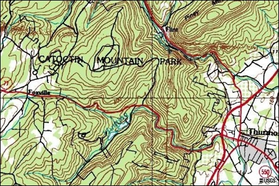</center> --- <h2>Vaš pohod</h2> Odločili ste se za krožno pot, ki se začne pri Cunningham Falls, potujete proti severu do Blue Ridge Overlook, proti jugu do centra za obiskovalce in nato nazaj do Cunningham Falls. Za informacije in nasvete o pohodu ste prosili nadzornika. Predlagal je, da bi morali, ker gre za približno 5 milj (8 km) pohoda, hoditi s hitrostjo približno 2 mph (3,2 kilometrov na uro). <center>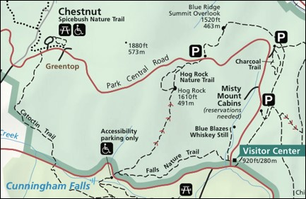</center> --- name:ivr <h2>Iskanje višin in razdalj</h2> Če želite ugotoviti, koliko kalorij (in Big Macov) ste porabili na pohodu, pot razdelite na zaporedje segmentov poti in poiščite stopnjo ali naklon vzdolž vsakega od njih. Priročno je začeti in končati segmente tam, kjer vaša pot prečka plastnico na zemljevidu. Naklon je preprosto razmerje med višinsko razliko med točkama in vodoravno razdaljo med točkama. Plastnice uporabite za določitev nadmorske višine (E, v metrih) vsake točke. Za določitev vodoravnih razdalj ($\Delta s$) med točkami uporabite dolžino segmenta poti na zemljevidu skupaj z merilom zemljevida. Preglednica prikazuje vaše podatke za osem segmentov, ki sestavljajo vašo sled zanke. 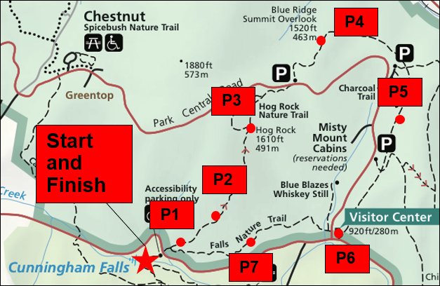 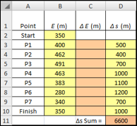 --- <br> <div class="shadowbox"> <img class="emoji" alt="warning" src="" height='30px'> Iz spletne učilnice si na svoj računalnik shranite Excelov delovni list. Izpolnite preglednice na vsakem od zavihkov, začenši z »Diapozitivi 7–15«. Rumene celice vsebujejo dane vrednosti, oranžne pa formule. Preglednica na zavihkih »Odgovori EOM« in »Napredni odgovori EOM« je namenjena vašim odgovorom na vprašanjem ob koncu modula oziroma napredna vprašanja ob koncu modula. <b>(Rešite samo zavihek Diapozitivi 7-15 in prvo nalogo na zavihku Odgovori EOM (Dodatna naloga))</b>. </div> <br> <center> <button onclick="klik()">Bomo zmogli?</button> <label id="na-klik"></label> </center> --- <h2>Izračun naklona</h2> Zdaj, ko imate višine in razdalje vzdolž svojih odsekov, poiščite razlike v višinah ($\Delta E$) med vašimi odseki. *(Tabela 3)* <img class="emoji" alt="memo" src="" height='30px'> **Opomba:** Ni vam treba izračunati razlik vaših razdalj, saj ste svoje razdalje izmerili od točke do točke. Čeprav vam je nadzornik rekel, da mora biti pohod dolg 5 milj, je vsota vaših razdalj bližja 6600 m (4,1 milje) (glejte Excelovo preglednico na [sliki](#ivr)). Opazili ste, da ste na zemljevidu izmerili razdalje v ravni črti, zato sklepate, da ne upoštevate ovinkov na poti. Lahko vzamete geodetski trak in poskušate natančneje izmeriti razdalje, vendar te opreme nimate. Uporabite torej matematiko: opazite, da je 5,0 milj 22 % večje od 4,1 milje (se strinjate?) in povečate vsako vodoravno razdaljo za enak odstotek. *(Tabela 4)* --- <center><figure> 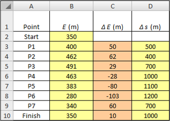 <figcaption>Tabela 3</figcaption> </figure></center> <center><figure> 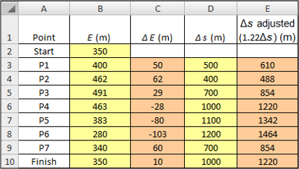 <figcaption>Tabela 4</figcaption> </figure></center> --- <br> Zdaj, ko ste izračunali vodoravno in navpično razdaljo, lahko izračunate naklon vzdolž vsakega segmenta poti tako, da navpično razdaljo ($\Delta E$) delite z vodoravno razdaljo ($\Delta s$). Potem, ker vodniki po pohodniških poteh navadno dajejo naklone (frakcije) kot stopnje (v odstotkih), pretvorite vse svoje naklone v stopnje tako, da pomnožite s 100. <br> <center>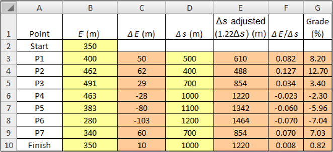</center> --- <h2>Izračun stopinj</h2> Za izračun kota vašega nagiba uporabite funkcijo arktangensa v Excelu. Če želite izvedeti več o arktangensih, kliknite tukaj: [Končna opomba 1](#opomba1). Koti, ki jih ustvari Excelova funkcija arktangensa, so v radianih, tako da pretvorite radiane (stolpec H) v stopinje (stolpec I). Kliknite tukaj za informacije o radianih: [Končna opomba 2](#opomba2) <center>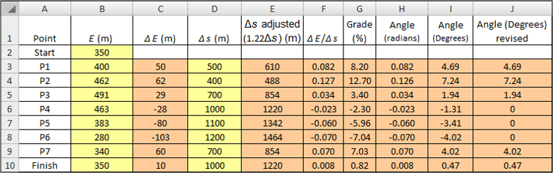</center> ??? Ali ve kdo kaj več o arktangensih in radianih? --- <br> Morda boste opazili, da obstajajo negativni nakloni in s tem negativni koti. Nekatere študije so pokazale, da hoja po negativnem klancu navzdol porabi kalorije z enako hitrostjo kot hoja po ravni površini (tj. 0-odstotna stopnja). Excel ima logično funkcijo (IF), ki omogoča pisanje formule za zamenjavo negativnih kotov z ničlami, vendar za zdaj ročno vstavite ustrezne ničle v stolpec J. * Formula za izračun celice H3: <font color="red"><ins>=ATAN(F3)</ins></font> * Formula za izračun celice I3: <font color="red"><ins>=DEGREES(H3)</ins></font> --- <h2>Rast porabe energije</h2> 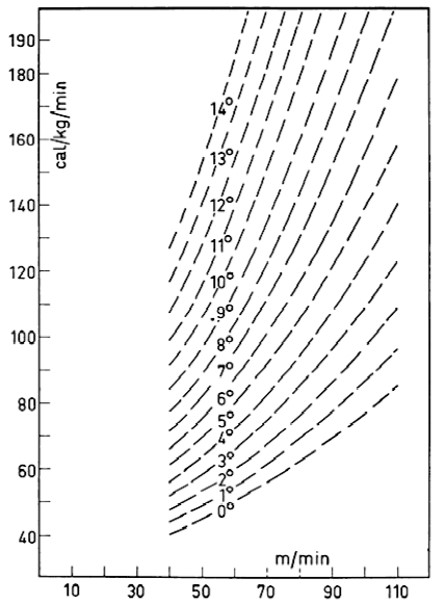 V literaturi najdete graf, ki prikazuje stopnjo porabe energije (os y) v primerjavi s stopnjo hoje (os x) za različne naklone (ločene črte na grafu). S to številko lahko določite stopnjo porabe energije (kal/kg/min) vzdolž vsakega segmenta poti in na podlagi teh vrednosti količino porabljene energije (porabljenih kalorij) v vsakem segmentu. Toda preden lahko izračunate kalorije, morate pretvoriti enote za obe stopnji. <br> <br> Hitrost, s katero ste hodili, je 2 mph, vaša teža (ki jo predvidevamo za ta primer) pa 150 lbs. Hitrost hoje morate pretvoriti v m/min in svojo težo v kg. ??? Pretvorbe --- <h2>Pretvorbe 1</h2> Spremenite svojo prejšnjo preglednico, da prikaže vaše znane vrednosti in njihove vrednosti, ko jih pretvorite v potrebne enote. <center>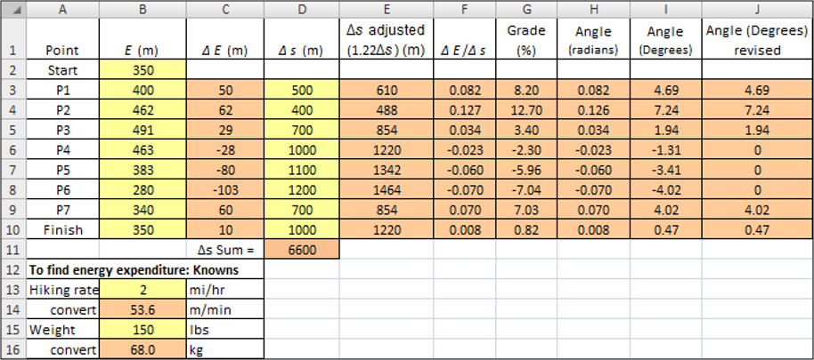</center> --- <h2>Branje z grafa</h2> Iz *Grafa 1* vnesete stopnje porabe energije za vsak segment poti v stolpec B svoje preglednice. Nadaljujte z ustvarjanjem preglednice z dodajanjem teh vrednosti. <center>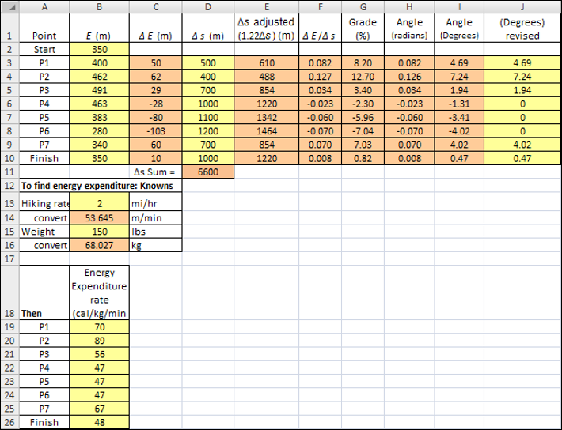</center> --- <h2>Pretvorbe 2</h2> Zdaj morate izračunati čas, ki ste ga porabili za hojo in vašo porabo kalorij v vsakem segmentu. Prav tako seštejte svoje porabe kalorij, da ugotovite skupno število kalorij, ki ste jih porabili na celotnem pohodu. <center>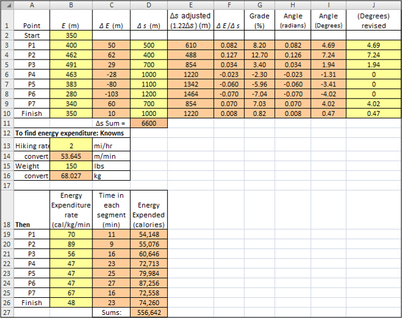</center> --- <h2>Prtevorba v Big Mac-e</h2> Zdaj, ko poznate število kalorij, ki ste jih porabili na pohodu, lahko izračunate število Big Macov, ki ste jih porabili. Raziščete splet in ugotovite, da ima Big Mac 560 kalorij. <center>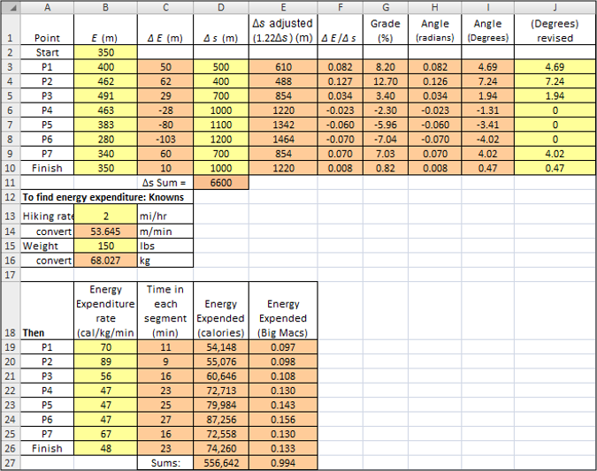</center> <img class="emoji" alt="warning" src="" height='30px'> Ne pozabite, da je kalorija kilokalorija, tako da je vrednost 560, ki ste jo našli za Big Mac-a, dejansko 560.000 kalorij. --- <h2>Zaključek</h2> Ko opravite vse izračune, ugotovite, da ste prehodili 5 milj v dveh urah in pol ter za to porabili samo 1 Big Mac-a. Naslednjič se raje odločite za solato, preden odidete na potep! <br> <div class="shadowbox"> <img class="emoji" alt="memo" src="" height='30px'><b>Dodatna naloga</b> <p>Spremenite svojo preglednico, da izračunate, koliko sendvičev Subway Veggie Delight ste pokurili na svojem pohodu. 6-palčni sendviči Veggie Delight imajo 230 kalorij.</p> </div> --- name:opomba1 <h2>Opomba 1 (tangens)</h2> Tangens kota ($\theta$) v pravokotnem trikotniku je razmerje med dolžino stranice, ki je nasproti kotu (tukaj $\Delta E$), in dolžine stranice, ki meji na kot ($\Delta s$). Arktangens poišče kot ($\theta$), katerega tangens je to razmerje. Druge sintakse arktangensa so: $\arctan$ ali $\tan^{-1}$. <center>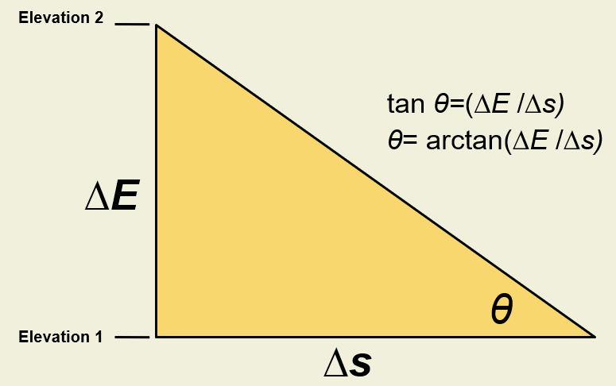</center> --- name:opomba2 <h2>Opomba 2 (radiani)</h2> Radiani so naravna merska enota za velikost kota. Za predstavo o konceptu radianov razmislite o rezini pite. Navesti želite velikost kota na "točki" rezine pite. Ta točka je v središču kroga (celotne pite) s polmerom, ki je enak dolžini strani rezine pite. Ukrivljena dolžina vzdolž zunanje strani skorje je dolžina loka. Očitno je, da večji kot je, večja je dolžina loka - seveda pod pogojem, da pita sama ne raste (tj. Polmer mora biti konstanten). Torej lahko določite velikost kota z navedbo razmerja med dolžino loka in polmerom (kot je prikazano na sliki). Vrednost tega razmerja je število radianov. Morda se spomnite, da je $\pi$ razmerje med obsegom kroga in njegovim premerom, premer pa je dvakrat večji od polmera. Potem bi moralo biti razmerje med dolžino loka polkrožne rezine torte (polovice torte) in njenim polmerom $\pi$ radianov (pomislite). Zato je $\pi$ radianov = 180 stopinj. Iz tega razmerja lahko pretvarjamo naprej in nazaj med radiani v stopinje tako enostavno, kot lahko pretvarjamo med, recimo, metri in čevlji. <center>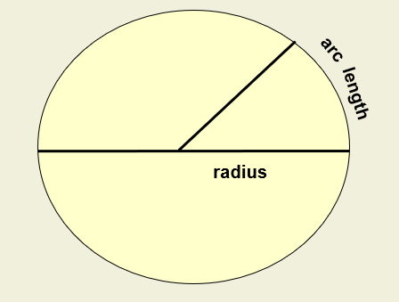</center>